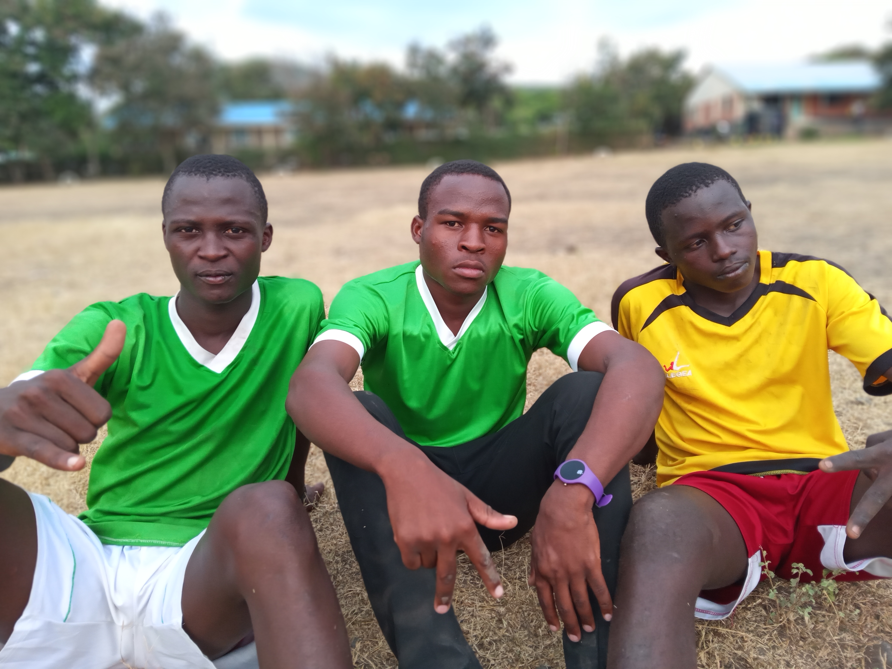

Godbura is a secondary school in Kenya ,Homabay county,SubaSouth Subcounty,Central Gwasi ward
History of the School
The school began in the year 1968 and is spornserd by the SDA CHURCH.
The School Covers over 5 acres of land about quater acre being subjected to food production,for the commmunity at large cherish food production.The school participates in several co-curiculum activities ,examples being football ,volleyball,science and Engineeering Fair,Music and many more.
The School has a superb record in the above activities with a concurent Yearly national Music festival Achievement,Regional Voleyball Quaters in 2022 and many where students out an exemplary peformance.
Suprisingly the school has significantly aided both the locals
and even those not coming from around with the aquisition of relevant education,
the school has been consitently improving with a great record in 2020 managing a mean of 6.20
and there has been better performance too the folllowing years .
PRINCIPALS
1977-1979 -MR.Dan O. Moth
1979-1980-MR. Shemekia O. Ogallo
1980-1983-MR.Dan O.Moth
1983-1990-MR.Jeremia O. Jonyo
1991-1993-MR. Joseph H. Odido
1995-1996-MR.Elijah O. Obondo
1996-1996- MR.Mukuwa P. Ochieng'
1996-2002 -MR. Suleiman O. Odipo
2003-2009-MR. Elphas A. Osodo
2009-2013-MR. Otieno J. Odongo
2014-2020- MR. Masiwo Joseph
2020-2021- MR.Zablon Rogito
2022-2023-MR.Collince Omondi
2024 -MR.Tom Nyambok
B.O.M CHAIRPERSONS
Benefits of Learning in the School
One gets fully equiped with competetive skill
Talents are properly natured
Students are traiined on the socio-life relationship
Students are subjected to discipline
Well stocked library
Good geographical location
Sufficient water and good food
Spritual nourishment every sartuday
Surportive Staff,Non teaching staff,adninistration and and board of management
Passionate Teachers
OUTLOOK
Sample pictures
After Training

GOD-BURA PAST K.C.S.E RESULTS
Click the Download Button to download past K.C.S.E results
OUR CORE VALUES
G-GOD FEARING
O-OBEDIENT
D-DILIGENCE
B-BRILIANCE
U-UNITY OF PURPOSE
R-RESPECT
A-ASPIRATION FOR EXCELLENCE
OUR VISION
TO BE A LEADING AND MOST PREFERED SCHOOL
IN THE PROVISION OF QUALITY
AND HOLISTIC EDUCATION IN THE AREA.
OUR MISIION
Contact us:
PHONE:0750305191
EMAIL:godburasecondary@ac.ke
BOX.NO.: 20-NYANDIWA
All rights are reserved.
SHINE ALLWAYS